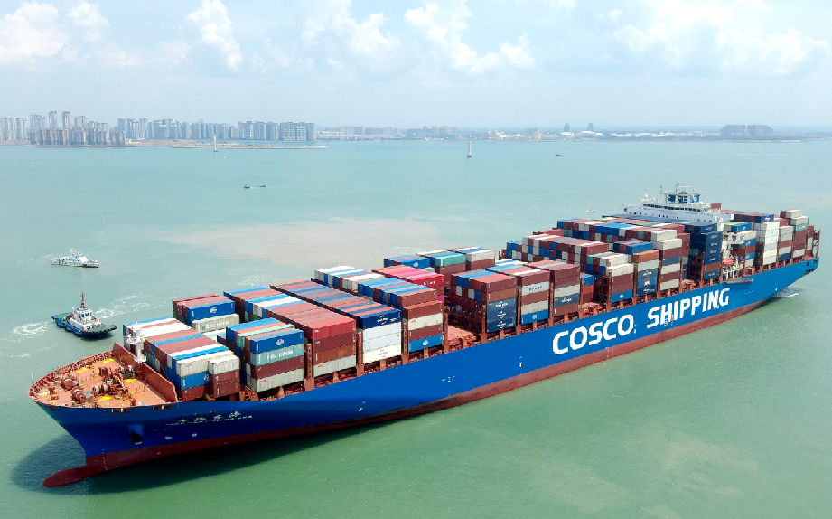
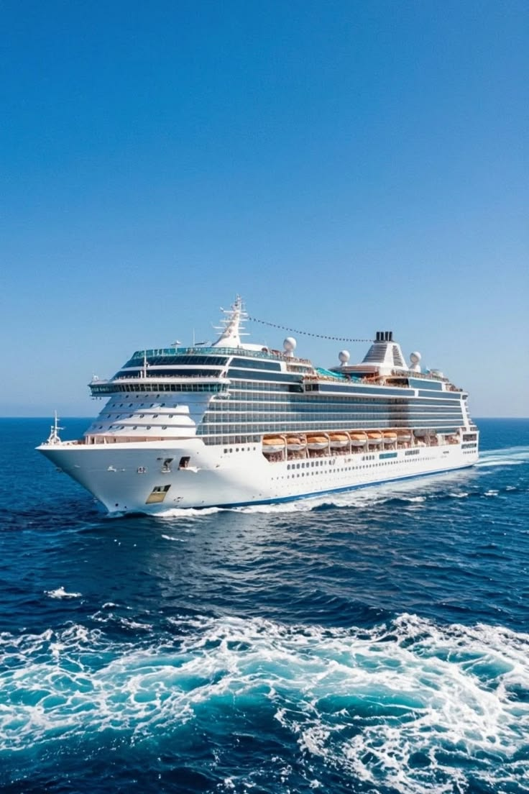
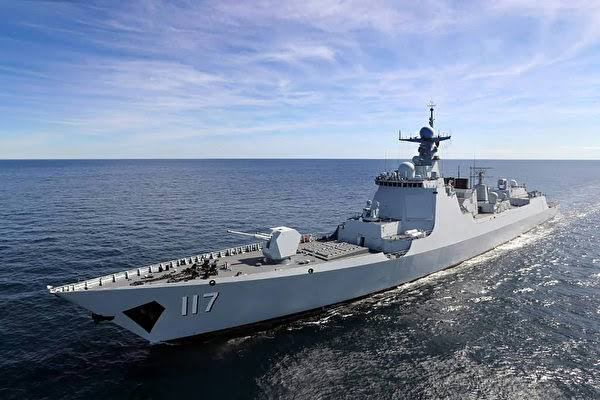
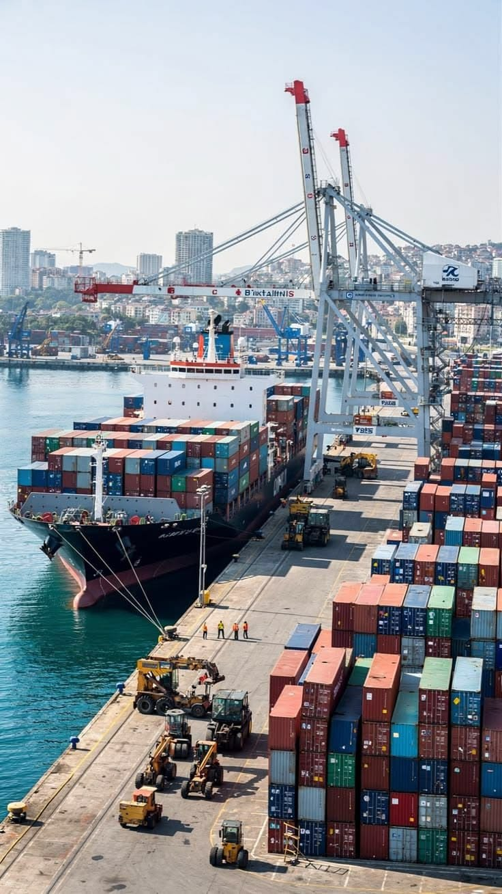

船舶是一套长期在海上运行的复杂工业系统。它既要承受风浪和货物重量，又要完成推进、导航、通信、装卸、供电、消防和人员生活等任务。点选下方卡片阅读详细说明。
一艘船大致由船体与结构、动力系统、能源系统、导航与通信系统、自动化系统、货物系统、安全系统、船员生活系统组成。这些系统必须在严酷海洋环境中长期协同工作，服役期往往长达二三十年。
船舶按用途可以分为集装箱船、油船、散货船、LNG船、汽车滚装船、客船、邮轮、工程船、海上风电安装船、军舰和深海装备船等。不同船型的设计重点差别很大：集装箱船重视装载量和航速，LNG船重视低温储罐和安全性，邮轮则高度重视舒适性、娱乐设施和消防疏散。

点击卡片，下方展开该系统的详细说明。
浮力 · 强度 · 空间
主机 · 轴系 · 推进
燃油 · 新燃料 · 混动
雷达 · ECDIS · 卫星
监控 · 报警 · 控制
装卸 · 液货 · 滚装
消防 · 救生 · 损管
居住 · 淡水 · 医疗
船体与结构是整艘船的物理载体，核心任务是提供浮力、强度和内部空间。船要浮在水上，靠的是排开水的体积与重量的平衡；同时船体必须承受波浪冲击、货物载荷、推进力、靠泊碰撞以及长期疲劳。
结构设计会决定舱室如何划分、甲板如何布置、货舱能装多少、油舱与压载舱怎么配置。强度不足会带来安全风险；强度过剩又会增加空船重量，挤占载货量并抬高建造与燃料成本。因此总体设计必须在强度、重量、舱容、稳性和建造工艺之间反复权衡。
动力系统通常包括主机、发电机、齿轮箱、轴系、螺旋桨、舵和侧推器。主机提供前进的主要推力；发电机为全船供电；齿轮箱与轴系把动力传到螺旋桨；舵负责转向；侧推器改善靠离泊与低速机动性。
动力系统直接决定航速、油耗、机动性与可靠性。远洋货船更关注长期经济航速下的油耗与维护周期；工程船、风电安装船则更强调低速操纵、动力定位与多机冗余。动力系统一旦在远洋故障，往往意味着高昂的停航损失与救援成本，因此船级社对其材料、冗余、试验与维护要求非常严格。
能源系统回答「船烧什么、电从哪来、能量如何存储与转换」。传统方案以燃油为主；当前行业正加速引入 LNG、甲醇、氨、氢、电池和混合动力。
燃料选择会牵动整船设计：低温储罐（LNG）、更大燃料舱（甲醇能量密度较低）、毒性隔离与通风（氨）、高压/液氢储存困难（氢）、电池重量与航程限制（纯电）。绿色转型会同时改变储舱、管路、消防、探测、加注、船员培训与船级社规则。
自动化系统相当于船舶的「神经系统」，用于监控机舱、配电、推进、液货、报警和安全状态。它实时采集传感器数据，在异常时报警，并按控制逻辑调节设备。
大型船舶通常还需要冗余控制、故障隔离、应急模式和网络安全设计。原因很简单：海上不能像陆地工厂那样随时停机派人检修。自动化做得好，船员能更早发现问题；做得不好，则会出现误报、漏报、系统孤岛，甚至在关键故障时无法安全降级。
货物系统因船型而异：集装箱船关注箱位、绑扎与装卸效率；油船与化学品船关注液货泵、管系与惰性气体；LNG 船关注低温货舱与蒸发气管理；矿石散货船关注舱口与装卸设备；汽车滚装船关注坡道、系固与甲板强度。
货物系统不仅影响赚钱能力（装得下、装得快、装得安全），也影响稳性、强度与港口作业时间。智能配载之所以重要，是因为集装箱船要在重量、船体强度、稳性、危险品隔离、卸货顺序和港口效率之间快速找到可行方案。
安全系统覆盖消防、救生、损管、应急电源、逃生和报警。它是 SOLAS（国际海上人命安全公约）与船级社审核的核心对象之一。
邮轮、客船因人员密度高，消防分区、疏散路径与救生容量要求尤为严格；液货船则对火灾爆炸风险更敏感。安全系统贯穿结构设计、材料选择、探测报警、应急电源与船员训练。
船员生活系统包括空调、淡水、污水处理、厨房、居住舱室和医疗设施。远洋航行可能连续数周甚至数月，生活系统直接影响人员健康、疲劳管理与适居性。
对邮轮而言，生活与娱乐设施上升为产品核心；对货船与工程船而言，则更强调可靠、易维护与满足公约对居住条件的最低要求。绿色与智能浪潮下，生活系统也要与节能、岸电接入、污水排放合规等要求一起设计。
同样叫「造船」，约束条件可以完全不同。切换标签阅读详细对比。


设计重点通常是装载量与航速。大舱口、甲板强度、稳性管理、绑扎与港口装卸效率是关键议题。船东关心单位航次能装多少箱、航速与油耗是否匹配班期，以及配载是否会触发超重、偏载或卸货冲突。
因此，智能配载、油耗监测与船期优化对集装箱船尤其有经济价值。结构上则要处理好大开口船体的扭转与强度问题。
设计重点是低温储罐与安全性。液化天然气通常在约 −162°C 下运输，货舱绝缘、蒸发气处理、泄漏探测、应急关断与船员操作规程都极为关键。船体结构必须与低温货舱系统协同设计，任何材料与焊接问题都可能放大为安全事故。
LNG 船既是高端船型，也是绿色航运中「燃料船」与「运输船」经验的重要来源——许多双燃料推进与加注经验，都与 LNG 产业链相关。
邮轮高度重视舒适性、娱乐设施和消防疏散。人员密度高、公共空间复杂，安全分区、逃生路径、救生设备容量与人性化设计权重远高于普通货船。同时，空调、淡水、污水处理与供电规模也远超货船。
豪华邮轮属于中国仍在攻坚的高端复杂船型之一：多专业协同、内装工程、安全规范与乘客体验管理，都显著抬高了设计与建造难度。
这类船强调起重、甲板作业、动力定位（DP）与特种设备。风电安装船需要在海上保持位置、吊装超大部件；海底施工与科考船也依赖高精度定位与复杂作业系统。
它们往往高度定制，标准化模板少，临时变更与现场约束多，对软件自动化与项目管理提出额外挑战——这也是国内外市场长期存在的难点之一。
油船关注液货安全、防污染与货油系统；散货船关注舱口、强度与装卸效率；汽车滚装船关注坡道、系固与多层甲板；军舰与深海装备船则另有任务系统、隐身/深潜、可靠性与特种规范。
学习船型时，不要只记名字，而要问：它运什么？最大风险是什么？设计上最不能妥协的约束是哪一条？
点击卡片阅读该环节的完整产业逻辑。

材料、设备与软件
设计与建造
船东、航运与服务
上游包括船板、型材、铝合金、复合材料、发动机、齿轮箱、泵阀、压缩机、螺旋桨、雷达、导航设备、船用电缆、配电柜、控制器和工业软件。
船舶行业的特点是设备种类非常多，而且很多设备必须经过船级社认证。发动机、推进器、配电系统、雷达等关键部件不仅要「能用」，还要能够在海上长期稳定运行。认证、备件、全球服务网络，往往比单纯的采购价格更能决定船东是否愿意采用某个品牌。
工业软件也属于上游能力：没有可靠的设计、仿真与生产软件，中游船厂的效率与质量会直接受限。这也是后面「卡脖子」章节的重点。
中游包括船舶设计院、船厂、海洋工程企业和系统集成企业。造船一般经历：市场需求分析、概念设计、基本设计、详细设计、生产设计、钢材切割、分段制造、船体合拢、设备安装、涂装、码头试验、航行试验和交付等阶段。
现代造船采取分段建造：船厂把船体拆成许多大型分段，同时进行钢结构、管路、电缆和设备安装，最后再合拢。这种方式可以缩短建造周期，但也要求设计、生产和供应链之间高度协同。生产设计若出现管子碰撞、设备无法安装、板材利用率低，现场返工成本会迅速放大。
下游包括船东、租船公司、港口、码头、船舶管理公司、船员服务企业、保险公司、船舶融资机构、船级社、维修企业和航运软件服务商。
船舶交付只是开始。船通常服役二三十年，期间持续产生燃料、维修、保险、港口、船员和合规成本。因此，船舶运营和售后服务的长期价值可能不低于新船建造本身。这也解释了为什么船队管理、预测维护、碳合规与船岸协同软件会成为长期市场。
可以把造船理解为一条不断把「需求」变成「可制造、可检验、可入级」实物的过程：